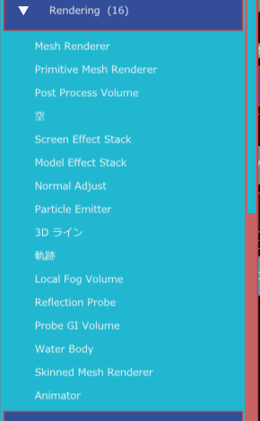
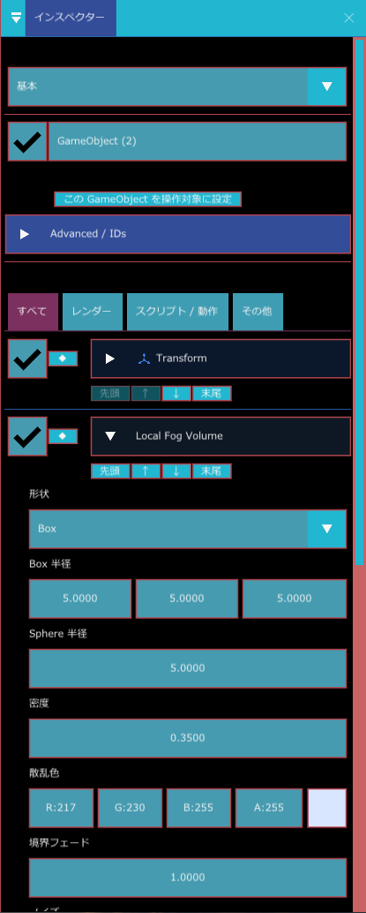
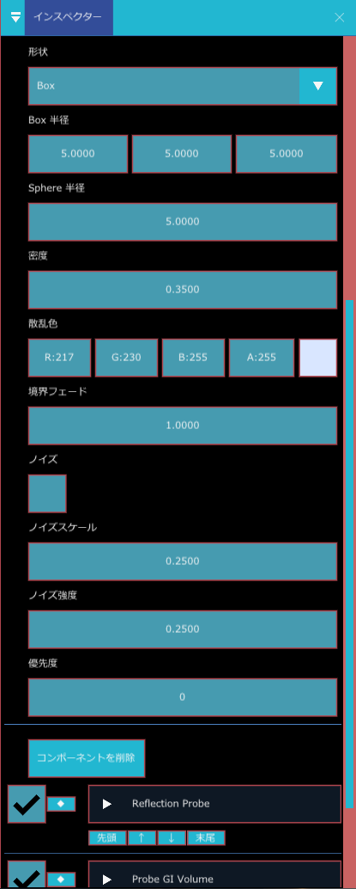
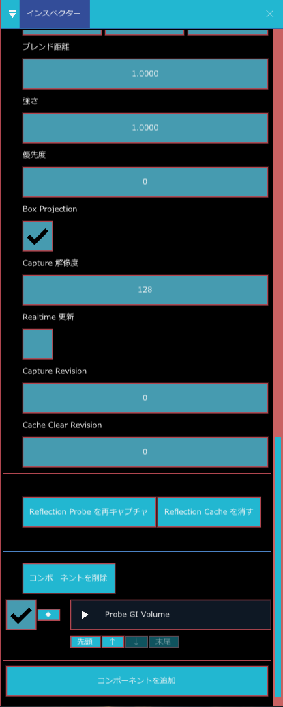
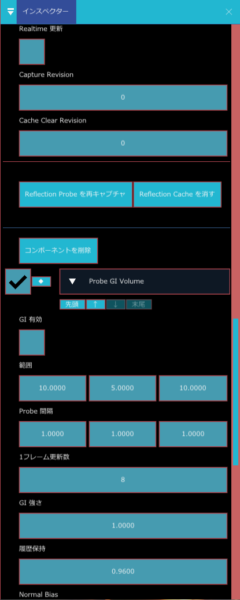
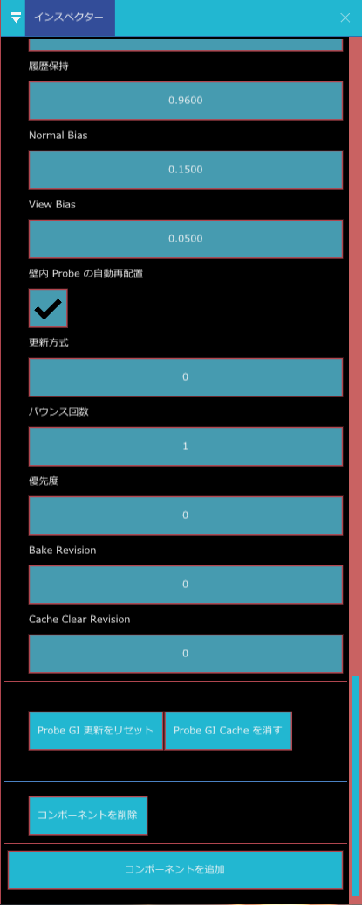

局所霧・Reflection Probe・Probe GI
シーンの一部の範囲だけに効かせる、環境の見た目の部品が 3 つあります。どれも GameObject の位置を中心にした箱（または球）の範囲を持ちます。
| 部品 | 役割 |
|---|---|
| Local Fog Volume | 範囲の中だけに霧を足す |
| Reflection Probe | 範囲の中の物に、周りの景色の映り込みを足す |
| Probe GI Volume | 範囲の中の間接光（壁で跳ね返って回り込む光）を計算する |
こんなときに使う
- 洞窟の入口や谷間など、ここだけ霧を濃くしたいとき（Local Fog Volume）
- 屋内の金属や光沢のある床に、周りの景色の映り込みを足したいとき（Reflection Probe）
- 日が当たらない室内の隅を、壁から跳ね返る光でほんのり明るくしたいとき（Probe GI Volume）
- 画面全体の設定では、場所ごとの違いを出せないとき
追加のしかたはどれも共通です。GameObject を選び、インスペクターの コンポーネントを追加 の検索欄に部品名を入れて選びます。範囲の大きさは Transform の拡大率ではなく、各部品の「範囲」の欄で決めます。
3 つとも、コンポーネントを追加 > Rendering の中にあります。

- Local Fog Volume：ボリューメトリック > 有効 がオンのとき。オフだと、置いても霧は出ません。
- Reflection Probe：反射プローブ > 使う がオン（既定でオン）のとき。
- Probe GI Volume：Probe GI > 有効 がオンで、さらに Volume 側の GI 有効 もオンのとき。
Local Fog Volume（局所霧）
Box または Sphere の範囲に、霧を足します。洞窟の入口、煙が立ちこめる場所、谷間の朝もやなど、シーン全体ではなくここだけに霧を置きたいときに使います。
プロパティ


| 表示名 | 内部名 | 種類 | 既定値 | 範囲 | 説明 |
|---|---|---|---|---|---|
| 形状 | shape | 選択 | Box | 霧の形です。Box か Sphere | |
| Box 半径 | half_extents | 3 つの数 | 5, 5, 5 | Box のとき、中心から各面までの距離（X・Y・Z）です。全体の大きさは 2 倍になります | |
| Sphere 半径 | radius | 小数 | 5 | 0.01〜10000 | Sphere のときの半径です |
| 密度 | density | 小数 | 0.35 | 0〜16 | 霧の濃さです。大きいほど向こうが見えなくなります |
| 散乱色 | color | 色 | R 217, G 230, B 255（色は 0〜255 の整数で入れます） | 霧の色です | |
| 境界フェード | falloff | 小数 | 1 | 0〜32 | 範囲のふちで霧がだんだん薄れる幅です。0 だとふちがくっきり出ます |
| ノイズ | noise_enabled | オン・オフ | オフ | オンにすると、霧に濃い所・薄い所のむらが付きます | |
| ノイズスケール | noise_scale | 小数 | 0.25 | 0.001〜64 | むらの細かさです |
| ノイズ強度 | noise_strength | 小数 | 0.25 | 0〜1 | むらの目立ち方です |
| 優先度 | priority | 整数 | 0 | 霧が重なる場所で、どちらを優先するかを決める数です |
Box 半径は Box のときだけ、Sphere 半径は Sphere のときだけ効きます。霧は、体積のある空間（ボリューム）に密度を足す方式です。
使い方の例：洞窟の入口に霧を置く
- 階層パネルで ＋ 作成 > 空の GameObject を作り、洞窟の入口の位置へ動かします。
- コンポーネントを追加 から Local Fog Volume を追加します。
- 形状 は Box のまま、Box 半径 を洞窟の入口が入る大きさ（たとえば 4, 3, 4）にします。
- 密度 を 0.5 くらいに上げ、散乱色 を少し暗い色にします。
- ふちが目立つときは 境界フェード を大きくします。むらが欲しいときは ノイズ をオンにします。
Reflection Probe（局所反射）
範囲の中の物へ、周りの景色の映り込み（反射）を足す部品です。Screen Space Reflection（SSR）は画面に映っているものしか反射できないので、画面の外にある景色や、裏側の景色は映せません。Reflection Probe は、置いた場所から周囲を撮影しておき、それを反射として使うので、そこを補えます。室内の金属、光沢のある床、水面（Water Body）の周りなどで使います。
プロパティ

| 表示名 | 内部名 | 種類 | 既定値 | 範囲 | 説明 |
|---|---|---|---|---|---|
| 範囲 | half_extents | 3 つの数 | 5, 5, 5 | 反射を効かせる箱の、中心から各面までの距離です。部屋なら部屋の大きさに合わせます | |
| ブレンド距離 | blend_distance | 小数 | 1 | 0〜1000 | 範囲のふちで、反射が周りとなじむ幅です |
| 強さ | intensity | 小数 | 1 | 0〜8 | 反射の強さです |
| 優先度 | priority | 整数 | 0 | Probe の範囲が重なる場所で、どちらを優先するかを決める数です | |
| Box Projection | box_projection | オン・オフ | オン | 反射を、範囲の箱の壁に貼り付けたように補正します。四角い部屋の中では、映り込みの位置が現実に近くなります | |
| Capture 解像度 | capture_resolution | 整数 | 128 | 32〜1024（32 刻み） | 撮影する画像の大きさです。大きいほど細かい映り込みになり、重く、メモリも使います |
| Realtime 更新 | realtime | オン・オフ | オフ | オフ（Bake）では、撮影した結果を保存して使い回します。オンでは、毎フレーム 1 面ずつ撮り直すので、動く物も映りますが重くなります | |
| Capture Revision | capture_revision | 整数 | 0 | 再撮影の世代番号です。下の「再キャプチャ」ボタンで増えます。手で書き換える必要はありません | |
| Cache Clear Revision | cache_clear_revision | 整数 | 0 | 保存済みキャッシュを消した世代の番号です（詳細項目）。ボタンで増えます |
インスペクターのボタン
- Reflection Probe を再キャプチャ：シーンを変えたあと、撮影し直します（Realtime がオフのとき）。
- Reflection Cache を消す：保存してあった撮影結果を消します。映り込みが古いままのときに押します。
- Bake（Realtime 更新がオフ）の結果は、シーンファイルの隣にキャッシュとして保存されます。
使い方の例：室内の床に部屋の映り込みを付ける
- 部屋の中央に空の GameObject を置き、Reflection Probe を追加します。
- 範囲 を部屋の半分の大きさ（幅 10 m の部屋なら X を 5）に合わせます。
- Box Projection がオンなことを確かめます。
- 家具や壁を動かしたあとは、Reflection Probe を再キャプチャ を押します。
- 映り込みが強すぎるときは 強さ を下げます。隣の部屋との境目が目立つときは ブレンド距離 を大きくします。
Probe GI Volume（Probe による間接光）
範囲の中に Probe（光を測る点）を格子状に並べ、壁や床で跳ね返って回り込んだ光（間接光）を作ります。日が当たらない室内の隅がほんのり明るくなる、赤い壁の近くの床がうっすら赤くなる、といった表現です。DXR（ハードウェアのレイトレーシング）は使わない方式です。
プロパティ


| 表示名 | 内部名 | 種類 | 既定値 | 範囲 | 説明 |
|---|---|---|---|---|---|
| GI 有効 | enabled | オン・オフ | オフ | この Volume の間接光を使うかどうか | |
| 範囲 | half_extents | 3 つの数 | 10, 5, 10 | Probe を並べる箱の、中心から各面までの距離です | |
| Probe 間隔 | spacing | 3 つの数 | 1, 1, 1 | Probe と Probe の間の距離（X・Y・Z）です。小さいほど細かい光になりますが、Probe の数と負荷が増えます。プロジェクト側の Probe 数の上限を超える場合は、実行時に間隔を自動で広げ、インスペクターに橙色で知らせます | |
| 1フレーム更新数 | probes_per_frame | 整数 | 8 | 1〜128 | Realtime のとき、1 フレームで更新する Probe の数です。大きいと早く反映されますが、そのぶん重くなります |
| GI 強さ | intensity | 小数 | 1 | 0〜8 | 間接光の明るさです |
| 履歴保持 | hysteresis | 小数 | 0.96 | 0〜0.999 | 前の結果をどれだけ残すかです。大きいと光の変化がゆっくりで安定し、小さいと変化に素早く追従しますがちらつきやすくなります |
| Normal Bias | normal_bias | 小数 | 0.15 | 0〜2 | 面の向きに沿って測る位置をずらす量です。壁際で光が漏れるときに上げます |
| View Bias | view_bias | 小数 | 0.05 | 0〜2 | カメラの方向に測る位置をずらす量です |
| 壁内 Probe の自動再配置 | relocate_probes | オン・オフ | オン | 壁の中に入ってしまった Probe を、壁の外へ押し戻します | |
| 更新方式 | update_mode | 数（0 か 1 を入力） | 0 | 0〜1 | 数字を直接入れる欄です（選択肢の一覧ではありません）。0 は Realtime（少しずつ更新し続ける）、1 は Baked（全部の更新が終わったら固定し、更新し直すまで変わらない） |
| バウンス回数 | bounce_count | 整数 | 1 | 1〜2 | 光が跳ね返る回数です。2 にするとより明るく自然になりますが、重くなります |
| 優先度 | priority | 整数 | 0 | Volume が重なる場所で、どちらを優先するかを決める数です | |
| Bake Revision | bake_revision | 整数 | 0 | 焼き直し・更新リセットの世代番号です。ボタンで増えます | |
| Cache Clear Revision | cache_clear_revision | 整数 | 0 | 保存済みキャッシュを消した世代の番号です（詳細項目） |
インスペクターのボタン
- Probe GI を焼く / 焼き直す（更新方式が Baked のとき）／ Probe GI 更新をリセット（Realtime のとき）：更新を最初からやり直します。シーンの形や明かりを変えたあとに押します。
- Probe GI Cache を消す：シーンの隣に保存された結果を消します。
- 更新中は「GI 更新 ○○%（○ / ○ Probe）」と進み具合が出ます。Baked は全 Probe の更新が終わると固定され、結果がキャッシュとして保存されます。
使い方の例：室内に間接光を入れる
- 部屋の中央に空の GameObject を置き、Probe GI Volume を追加します。
- GI 有効 をオンにします。
- 範囲 を部屋がすっぽり入る大きさにします。
- 最初は Probe 間隔 を 2, 2, 2 くらいにして、進み具合が 100% になるまで待ちます。
- 暗い隅の光がまだ粗いときだけ、間隔を 1 に近づけます。
- 動かない部屋なら、更新方式 を 1（Baked）にして、Probe GI を焼く / 焼き直す を押します。以降は負荷がかかりません。
関連項目
- Post Process Volume（画面全体の SSR・SSAO など）
- Water Body
- ライト